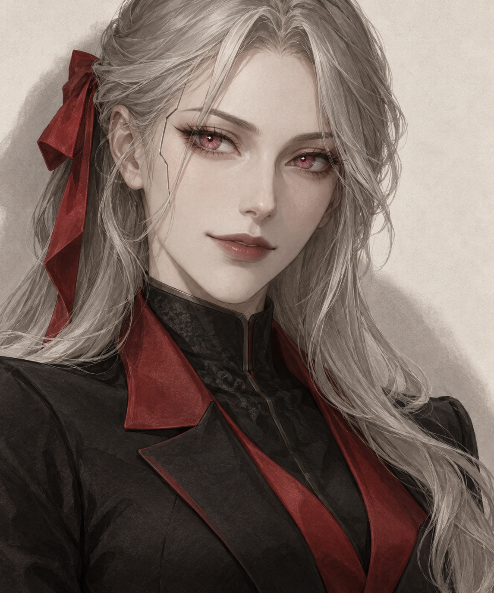

арти.
Общение. Идеи. Всё рядом.
16 статичных экранов с примерными данными. Для согласования дизайна и сценариев.
Общение
С Арти, один на один и в своих группах.
01—06Чаты
Закреплённая Арти, люди, группы и быстрый переход к проекту.
Чаты 4

Никакую. В этом и достоинство.
Этот красный — очень в твоём духе.
Арти: Ранний подъём исключила.
Голосовое сообщение · 0:18
Разговор с Арти
Общая история с Telegram. Предложение Арти и свой вариант.
Арти
Личный разговор
Личный разговор
Ответы, снимки и голосовые. Пространство для двоих.
Аня
в сети
Группа с Арти
Помощник включается по @обращению и видит контекст комнаты.
Идеи на выходные
4 человека · Арти
Новый разговор
Личный чат или своя группа. Можно пригласить по ссылке.
Новый разговор
Соберите своих
Участники
ВЫБРАНО 3Арти можно добавить в комнате позже
О комнате
Участники, приглашения и понятные границы памяти Арти.
Идеи на выходные
4 человека и Арти
Напишите @Арти, когда нужна помощь.
Участники
5АртиПомощник · ИИИдеи и инструменты
Создавать новое и сохранять результат.
07—09Создать
Личный музыкальный проект Арти и доступные инструменты.
Создать
От идеи — к результату
Запись № 7
«Нашла пропавшую фразу.»

Инструменты
Изображение
Из описания — в кадр

Видео
Оживить идею
Музыка
Найти звучание
Изображение
Описание, формат и результат с понятным сохранением.
Изображение
Проект «Вечер без повода»
Бумажный цветок. Лаконичная форма, глубокий красный, свет сбоку. Никаких лишних деталей.
Я бы оставила красный.Другой стиль Иллюстративный пример результата
Пространство
Проекты, задачи и файлы, к которым легко вернуться.
Пространство
Проекты, файлы и важные дела
Вечер без повода
Музыка, свет и один хороший кадр
Следующая задача
Все делаНедавние файлы
2 файлаПроекты и личное
Всё важное с понятным контекстом.
10—12Проект
Связанный разговор, прогресс, задачи и результаты.
Вечер без повода
Собрать из музыки, света и одного кадра вечер, который хочется сохранить.
Задачи
2 из 5Материалы
2 файлаКрасный,без поводаИзображение
Дела и напоминания
Понятное время и короткий список без перегруженного календаря.
Дела
Профиль и память
Договорённости с источником, датой и управлением записью.
Профиль
Елена
Личное пространство
Память и договорённости
Сначала спросить
Выбирать за тебя — только если попросишь.
Настройки
Тёмная тема
Те же сценарии. Мягче для глаз вечером.
13—16Чаты
DARKЗакреплённая Арти, люди, группы и быстрый переход к проекту.
Чаты 4
Никакую. В этом и достоинство.
Этот красный — очень в твоём духе.
Арти: Ранний подъём исключила.
Голосовое сообщение · 0:18
Разговор с Арти
DARKОбщая история с Telegram. Предложение Арти и свой вариант.
Арти
Личный разговор
Группа с Арти
DARKПомощник включается по @обращению и видит контекст комнаты.
Идеи на выходные
4 человека · Арти
Профиль и память
DARKДоговорённости с источником, датой и управлением записью.
Профиль
Елена
Личное пространство
Память и договорённости
Сначала спросить
Выбирать за тебя — только если попросишь.